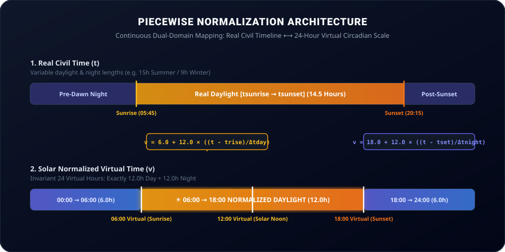

Developer SDK & Mathematical Architecture
Integrate the zero-dependency heliocentric time normalizer into TypeScript, JavaScript, Node.js, Web, or Mobile applications.
Piecewise Normalization Architecture

💻 TypeScript SDK Quickstart
Install from repository or copy the standalone engine:
import { NormalizedTimeEngine } from './src/core';
const engine = new NormalizedTimeEngine();
const location = {
latitude: -33.4489,
longitude: -70.6693,
name: 'Santiago',
timezone: 'America/Santiago'
};
// 1. Convert Real Time -> Virtual Time
const virtual = engine.toVirtualTime(new Date(), location);
console.log(virtual.virtualTimeStr); // "08:34:12"
console.log(virtual.phase); // "DAY"
console.log(virtual.dilationFactor); // 1.18x
console.log(virtual.solarAltitudeDeg);// 34.2°
// 2. Convert Virtual Time -> Real Civil Date
const virtualHour = 8.5; // 08:30 Virtual
const realDate = engine.toRealTime(virtualHour, new Date(), location);
console.log(realDate.toLocaleTimeString()); // e.g. "09:48 AM"📐 Mathematical Piecewise Formulation
1. Daylight Interval [trise, tset]
06:00v → 18:00v
v(t) = 6.0 + ((t - t_rise) / Δt_day) × 12.0
Time Dilation Factor:
k_day = 12.0 / Δt_day_hours
2. Night Interval [tset, tnext_rise]
18:00v → 06:00v
v(t) = (18.0 + ((t - t_set) / Δt_night) × 12.0) mod 24.0
Time Dilation Factor:
k_night = 12.0 / Δt_night_hours
3. Inverse Mapping (v → t)
Invertible
t(v) = t_rise + ((v - 6.0) / 12.0) × Δt_day
Sub-millisecond precision:
6.0 ≤ v ≤ 18.0
📚 Core Engine API Reference
| Method / Function | Input Parameters | Return Type | Description |
|---|---|---|---|
| toVirtualTime(date, location) | Date, GeoLocation | NormalizedTime | Transforms real civil timestamp to normalized 24-hour virtual time object. |
| toRealTime(virtualHour, date, location) | number (0-24), Date, GeoLocation | Date | Inverse calculation: converts virtual hour on reference date into exact civil Date. |
| getSolarTimes(date, location) | Date, GeoLocation | SolarTimes | Computes exact sunrise, solar noon, sunset, twilights, and nadir. |
| getSolarPosition(date, lat, lng) | Date, number, number | { altitudeDeg, azimuthDeg } | Calculates real-time solar elevation altitude and azimuth in sky. |